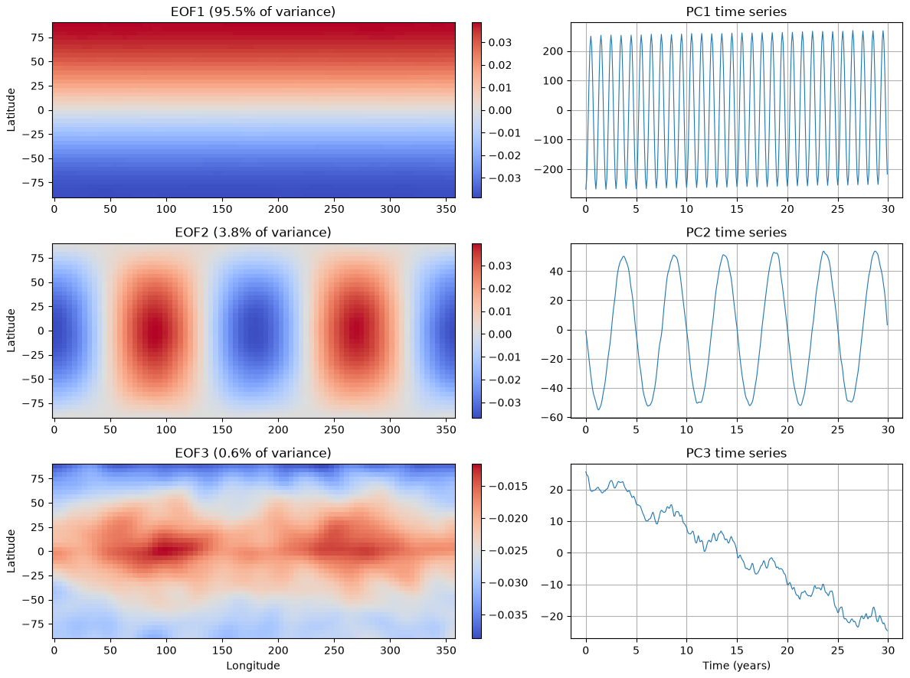
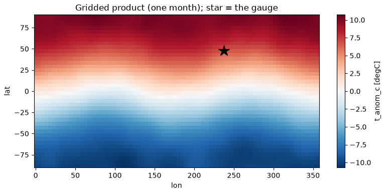

✓The data card’s ancestor: every dataset ships with its provenance, composition, and intended use.
Gebru, T., et al. (2021). Datasheets for datasets. Communications of the ACM, 64(12), 86–92.
📖The playbook: findable, accessible, interoperable, reusable — where “AI-ready” starts.
Wilkinson, M. D., et al. (2016). The FAIR Guiding Principles for scientific data management and stewardship. Scientific Data, 3, 160018.
📖Leakage formalized: how information from outside the training data sneaks into the model.
Kaufman, S., Rosset, S., Perlich, C. & Stitelman, O. (2012). Leakage in data mining: Formulation, detection, and avoidance. ACM Transactions on Knowledge Discovery from Data, 6(4), 15.
✗Leakage found in hundreds of published ML-for-science papers across 17 fields — inflated claims, then corrections.
Kapoor, S. & Narayanan, A. (2023). Leakage and the reproducibility crisis in machine-learning-based science. Patterns, 4(9), 100804.
Data documentation and leakage are now a literature of their own — including a documented reproducibility crisis.
First, shrink the feature space

A 30-year gridded temperature field, synthetic (mlgeo_synth) with planted patterns: the first mode carries 95.5% of the variance and matches the planted seasonal pattern with correlation 1.00.
A dataset is AI-ready when it passes this checklist
Documented provenance, license, citation
Machine-readable metadata — a data card
Tidy shapes
Explicit units
A missing-data policy
Benchmark splits shipped with the data
Leakage controls
A class and event inventory
The plan for today: build a dataset that passes, then break rules 6 and 7 on purpose and watch the metrics lie.
Break rule 7, watch the metric lie
1.000 average precision — rare-class oversampling before the split
0.848 average precision — oversampling the training split only
Average precision summarizes rare-event skill (1 = perfect). Same model, same flood data — duplicated flood days landed on both sides of the split.
The perfect score is pure fiction. Leakage does not make models better — it makes evaluations wrong.
The join every project needs: raster → station

A gridded product and a gauge (star) that sits between cell centers, synthetic (mlgeo_synth). Extract at the location, then merge in time without touching the future.
An honest pipeline may return “no”
0.722 average precision — discharge features only
0.710 average precision — plus the joined temperature covariate
The covariate carried no information about the floods, and the honest pipeline said so. The deliverable was never the score — it is the leakage-safe, unit-labeled, reproducible join.
The checklist is the capstone
Checklist item
The question it answers
Today’s evidence
Data card (1–5)
can a stranger — or a script — use this safely?
YAML card written, read back, parsed
Shipped splits (6)
is everyone graded on the same held-out data?
split column: 2015–21 / 2022 / 2023–24
Leakage controls (7)
do my samples share time, location, or an event?
1.000 vs 0.848; shuffled 0.839 vs temporal 0.704
Class inventory (8)
is my problem rare-event or balanced?
312 flood days of 3,652 (8.5%), 33 events
“The split and the preprocessing are part of the dataset, not an afterthought of the model.”
Now run it yourself — open 2.13 (and skim 2.12)
pixi run jupyter lab → 2.13_MLready_data.ipynb
Write the data card, read it back with the YAML parser — item by item, what would a stranger still not know?
Break rule 7 yourself: oversample before the split and reproduce AP = 1.000
Run the three split designs; explain the 0.839 → 0.704 drop in one sentence
Your team’s dataset against the eight items: which fail today? (Bring the list to check-in #1, Nov 16.)
Friday: the critical-evaluation lab (6.2) — Chapter 2’s capstone, your data skills vs an AI’s claims · Reading-arc stage 1 due today · Ch 2 quiz opens Mon